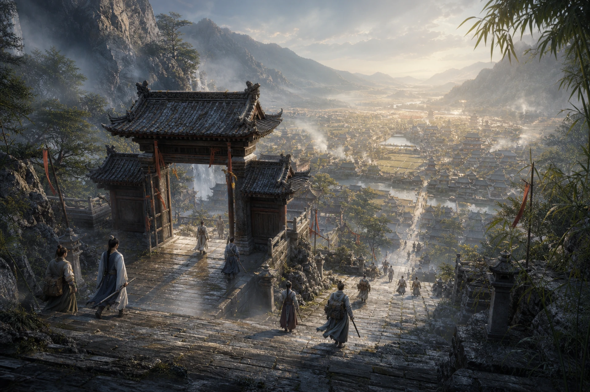

从红尘中学剑，向红尘中还剑。
红尘剑宗建在山中，山门却朝向山下城郭。门人不以斩断尘缘证明道心，而是在一次次上山问剑、下山行剑与归宗记剑中，明白自己为何出剑、又该在何时归鞘。

战斗定位
- 核心资源：剑意，上限 6 点。
- 默认剑式：《问剑式》。
- 终结神通：《此剑平生》。
- 道途一：照影游尘，快剑、身法、连击、剑痕、多段收束。
- 道途二：守拙藏锋，护盾、承势、反击、裂甲、单段重击。
红尘剑宗的基础神通同时具备进攻、身法、驱散与防守能力。选择道途后，同一门剑招会被重新组织：快剑将《剑荡山河》化为五段连击，重剑则把它压成带有护盾的单段重击。
六卷心法
| 心法 | 长期成长 | 代表神通 |
|---|---|---|
| 《红尘剑录》 | 宗门总纲，限制分卷等级 | 《问剑式》《此剑平生》 |
| 《观微剑意》 | 每级提高命中 | 《一剑破妄》 |
| 《剑气长歌》 | 每级提高物理攻击 | 《剑起沧澜》《剑荡山河》 |
| 《凌虚步》 | 每级提高闪避率 | 《藏锋听雷》《踏雪无痕》 |
| 《澄心剑诀》 | 每级提高法术防御 | 《剑心通明》 |
| 《不灭剑体》 | 每级提高物理防御 | 《人剑合一》 |
《一剑破妄》负责驱散敌方护持，《剑心通明》与《人剑合一》提供不同方向的自保。《藏锋听雷》则是两条道途都很重视的节奏技能：快剑借它制造闪避反击，重剑用它承受来势并蓄积后发一击。
道途一：照影游尘
照影游尘让剑随身走、身随势变。它通过迅疾剑式施加“剑痕”，再让《此剑平生》随剑意追加斩击。
主要机制包括：
- 《剑起沧澜》在身法高于目标时追加追击。
- 《剑荡山河》变为五段连击，获得更多剑意并施加剑痕。
- 《藏锋听雷》改为先攻后守，短暂提高闪避；首次闪避时反击并积势。
- 《踏雪无痕》进一步强化身法、闪避与首次闪避后的积势。
- 《此剑平生》由单段爆发改为随剑意增加段数的连续斩击。
照影游尘提供三套自动战术：追风 倾向尽早收割低血目标，连势 会先补足剑痕与剑意，回燕 则围绕身法与闪避反击保持攻势。
这条道途适合喜欢主动抢节奏、观察速度关系，并通过多段攻击放大收益的玩家。
道途二：守拙藏锋
守拙藏锋不争一时之快。它以护盾吸收伤害并积蓄剑意，通过承势与反击施加“裂甲”，最后将剑意汇入一记重锋。
主要机制包括：
- 《剑起沧澜》提高威力并获得护盾，但冷却更长。
- 《剑荡山河》由连击变为单段重击，并同时获得护盾。
- 《藏锋听雷》进一步提高直接伤害减免，保留先守后攻的结构。
- 《踏雪无痕》不再强调闪避，改为提供护盾、物防与积势。
- 护盾吸收直接伤害后，每回合可由“大巧不工”获得一点剑意。
- 《此剑平生》获得更高的剑意转化，成为高倍率单段爆发。
守拙藏锋提供 后发、极势、守山 三套战术。后发重视尽早架起《藏锋听雷》，极势会先补裂甲再满势收束，守山则优先维持护盾与血线。
这条道途适合喜欢稳住局面、以防守换资源，并等待一剑定局的玩家。
山门舆图

红尘剑宗的主要设施包括问剑堂、剑录阁、照影崖、试剑台、执事堂与宗门宝库。山中还有铸剑坊、矿场、药田和弟子院。所有道路最终都能回到那条通往山下的石阶——因为这座剑宗从不把离开人间视为修行的终点。
选择建议
如果你希望构筑围绕命中、身法、连击与闪避展开，优先关注照影游尘；如果你更在意护盾、物防、后发反击与高倍率单击，守拙藏锋会更合适。
两条道途共享同一套心法基础，已习得后可以免费切换。前期研习心法时，仍建议先围绕自己最常用的主动神通分配资源。